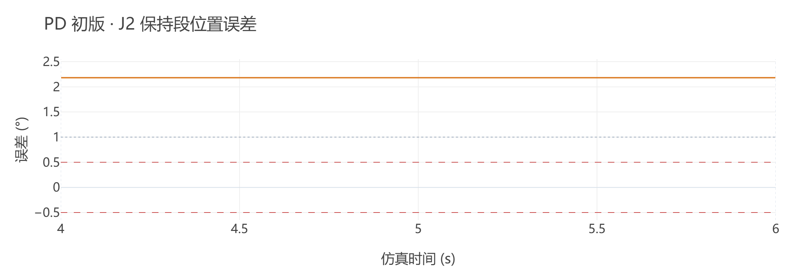
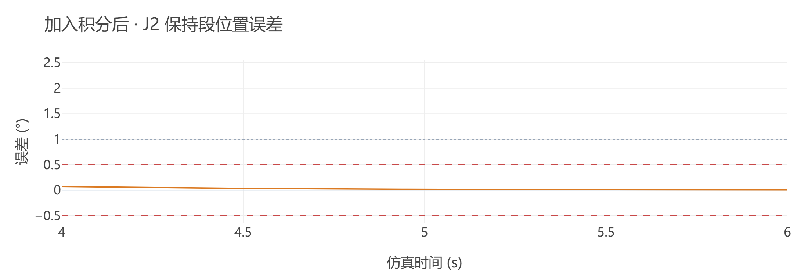
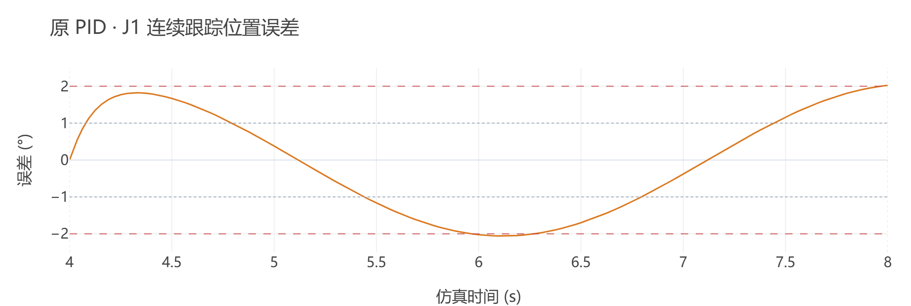
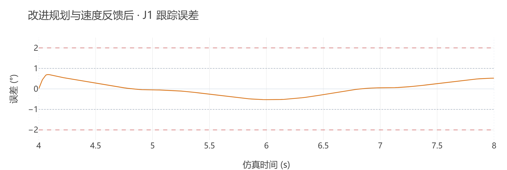
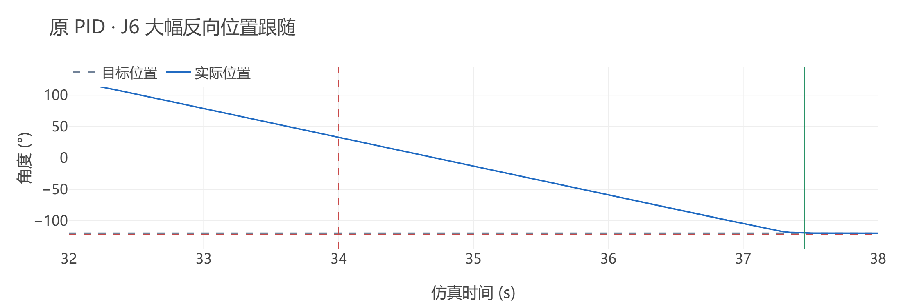
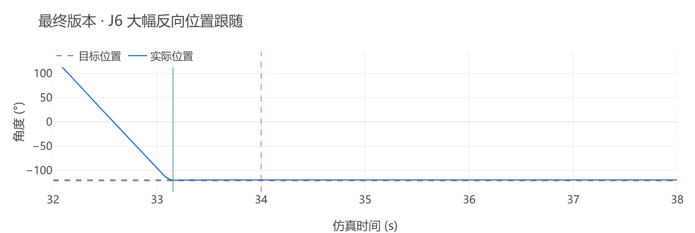
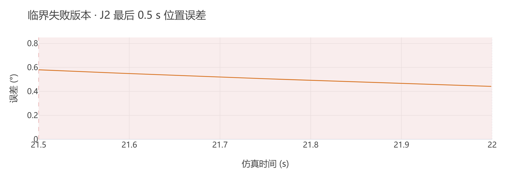
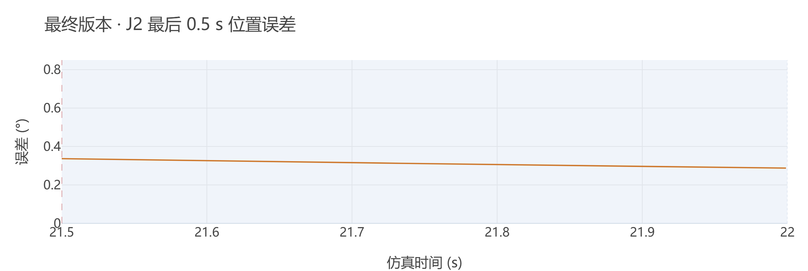
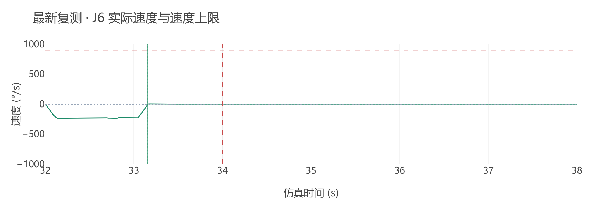
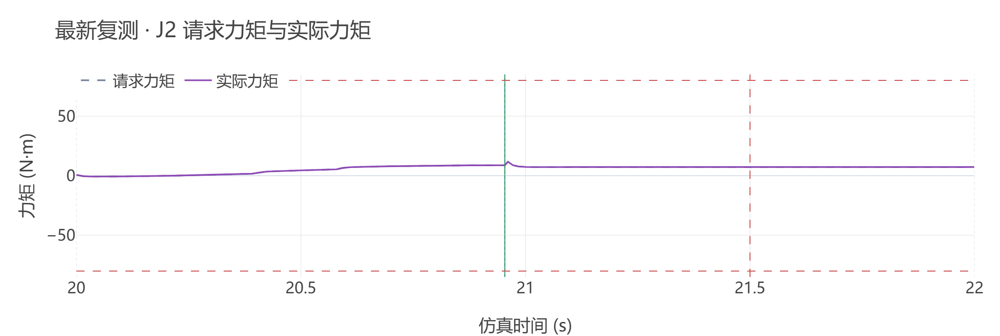

从“能够运动，但停不准、跟不上”，到同一套代码与参数完整通过四项正式 benchmark。
实验记录：2026 年 11 月 10 日—11 月 25 日
| 工况 | 任务 | 最新复测 |
|---|---|---|
| posture_hold | 姿态保持 | PASS |
| joint_step | 单轴阶跃与保持轴抗扰 | PASS |
| joint_tracking | 连续跟随及结束后恢复 | PASS |
| target_switch | 多轴改目标、撤回与反向 | PASS |
joint_sine 为 OBSERVE 示例，不属于必须判为 PASS 的四项正式工况。
| 指标 | 原条件积分 PID | 最终版本 | 要求 |
|---|---|---|---|
| J1 跟踪误差 RMS | 1.392° | 0.334° | ≤1° |
| J6 大幅反向调节时间 | 5.455 s | 1.153 s | ≤2 s |
| J2 大阶跃末段误差 RMS | 1.930° | 0.312° | ≤0.5° |
先用积分解决静态负载偏差；再改进参考运动与速度反馈，解决动态滞后和到位过慢；最后针对剩余的阶跃失败调整刚度、阻尼和积分恢复能力。
本 PDF 依据已保存的 result.json、report.html、源码快照及参数记录整理，没有重新运行仿真。后文 10 张曲线图直接由原报告中的 Plotly 图表导出；为便于打印和对比，只调整显示尺寸、字体与坐标范围，曲线数据和判定不变。
| 轮次 | 结果时间 | 版本 | 本轮修改 | 判定 |
|---|---|---|---|---|
| 1 | 11-10 21:27 | PD 初版 | 参考限速 + PD，仅运行姿态保持。 | FAIL 6 项失败检查 |
| 2 | 11-20 14:24 | 加入条件积分 | J2/J3 增加积分、限幅和抗饱和。 | FAIL 26 项失败检查 |
| 3 | 11-20 14:32 | 规划与速度反馈 | 增加加减速、刹车及参考速度反馈。 | FAIL 6 项失败检查 |
| 4 | 11-20 14:33 | 第一次调整 J2 | J2：Kp 120→360，Kd 18→36。 | FAIL 2 项失败检查 |
| 5 | 11-20 14:34 | 调整 J2/J3 | J2：Ki 120→180；J3：Kp 60→120，Kd 8→12。 | FAIL 1 项失败检查 |
| 6 | 11-20 14:36 | 首次完整 PASS | J2：Kp 360→600，Kd 36→48。 | PASS 0 项失败检查 |
| 7 | 11-25 15:27 | 同版本重新评测 | 搬盘后恢复工具环境，以相同源码重跑 all。 | PASS 0 项失败检查 |
时间为 result.json 保留的结果文件时间（北京时间），并用参数和源码版本核对。搬盘重置了旧文件夹创建时间，故未按文件夹创建时间排序。第 1 轮只测试 posture_hold，第 2 轮起才是完整 all，失败项数量不能跨这两种范围直接比较。
| 场景 | 主要要求 |
|---|---|
| 姿态保持 | 六轴最大位置误差 ≤0.5°；速度 RMS ≤1°/s。 |
| 单轴阶跃 | 主动轴超调 ≤2°、调节时间 ≤1.5 s；保持轴最大偏差 ≤1°。 |
| 连续跟随 / 恢复 | 跟踪 RMS ≤1°、最大误差 ≤2°；恢复调节时间 ≤0.5 s；保持轴偏差 ≤1°。 |
| 目标切换 | 完整响应段超调 ≤2°、调节时间 ≤2 s；保持轴偏差 ≤1°。 |
| 共同要求 | 适用响应/恢复段末 0.5 s：六轴误差 RMS ≤0.5°；正式工况全过程满足实际速度上限。 |
从阶段开始计时，找到位置误差绝对值 ≤1°、速度绝对值 ≤5°/s，并持续到阶段结束的时刻；末段至少持续 0.2 s。原始目标与实际位置用于评分，内部参考规划的延迟也计入误差。
短暂改目标段 brief_target、resume_motion 的适用项不同，具体以报告逐项检查为准。程序正常退出后仍需查看 evaluation.assessment.status。
PD 初版在保持段已经几乎停止运动，但 J2 仍有约 2.181° 的误差。D 项随速度接近零而减小，P 项依靠这份固定偏差产生支撑负载的力矩。


为什么积分有效：即使位置误差逐渐减小，已经积累的积分力矩仍可继续支撑机械臂。J2、J3 启用积分，其余轴继续使用 PD。
同时加入保护：积分力矩单独限幅；总请求饱和且增量继续推动饱和时暂停本次积分；Reset 清零。内部参考运动期间保留旧积分，参考停止后再学习静态补偿。
加入积分后，姿态保持通过，但连续运动仍有误差。原 D 项在正常运动时也产生阻尼，控制器需要额外位置误差来抵消它。


参考速度非零时，速度项帮助实际速度跟上计划；参考速度为零时，它自然恢复为抑制剩余运动的阻尼。
这是该轮“规划 + 速度反馈”组合修改的实测效果，不能把全部改善唯一归因于某一个参数。红虚线 ±2° 是最大误差上限；RMS 需要按整段计算，不能只看某一点是否进入误差带。
旧腕部参考速度仅 0.8 rad/s。J6 从 +120° 到 −120°，参考需移动约 4.189 rad，仅按原限速推进就要约 5.24 s，无法满足 2 s 的调节时间要求。


修改方法：提高参考速度；离目标远时允许加速，接近目标时按停止距离减速。J6 最大参考速度改为 4 rad/s，并配合加减速处理。
内部规划限制不等于实际速度硬限制，仍需检查真实速度。末步会对齐目标并清零参考速度，这是简化的在线规划器，不是完整的最优轨迹规划器。
规划和速度反馈改进后，只剩 joint_step 失败。于是定位到 j2_step_4，分别处理 J2 主动轴的超调、末段误差，以及 J3 保持轴被带偏的问题。
| 版本 | J2：Kp / Kd / Ki | J3：Kp / Kd | J2 末段 RMS | 失败项 |
|---|---|---|---|---|
| 规划改进 | 120 / 18 / 120 | 60 / 8 | 1.320° | 6 |
| 调整 J2 | 360 / 36 / 120 | 60 / 8 | 0.524° | 2 |
| 调整 J2/J3 | 360 / 36 / 180 | 120 / 12 | 0.509° | 1 |
| 最终固定 | 600 / 48 / 180 | 120 / 12 | 0.312° | 0 |


背景阴影是末段 RMS 统计区。该指标检查整个区间的均方根误差，不能把单个采样点与 0.5° 比较来代替 RMS。目录名 final-pid 的版本实际上仍为 FAIL；判定以结果数据为准。
最终版本在同一组代码和参数下完成四项正式工况。首次整体 PASS 后，11 月 25 日在 E 盘重新运行，整体与四项工况再次 PASS，框架契约检查记录为 2/2 通过。
| 实际速度（°/s） | J1 | J2 | J3 | J4 | J5 | J6 |
|---|---|---|---|---|---|---|
| 四项全程峰值 | 71.3 | 71.1 | 89.5 | 178.0 | 177.2 | 236.5 |
| 模型上限 | 216 | 240 | 216 | 720 | 720 | 900 |


result.json 中 evaluation.assessment.status 为 PASS；所有必需阶段数据完整，并满足版本 2 规则。单纯进程退出码为 0 不等于性能通过。
控制源码改动：simulation/arm/arm.cpp 与 arm.hpp。前者实现参考生成、P/D/I 计算和限幅；后者保存参考位置、参考速度与积分状态。模型、工况、公共输入输出类型和评分规则保持原样；另有说明文档及生成的实验文件。
| 参数 | J1 | J2 | J3 | J4 | J5 | J6 |
|---|---|---|---|---|---|---|
| Kp | 60 | 600 | 120 | 4 | 3 | 0.8 |
| Kd | 8 | 48 | 12 | 0.4 | 0.3 | 0.08 |
| Ki | 0 | 180 | 80 | 0 | 0 | 0 |
| 参考速度 rad/s | 1.2 | 1.2 | 1.5 | 3 | 3 | 4 |
| 参考加速度 rad/s² | 4 | 3 | 6 | 25 | 25 | 35 |
| 积分额度 N·m | 0 | 16 | 8 | 0 | 0 | 0 |
| 电机力矩上限 N·m | 20 | 80 | 20 | 10 | 10 | 2 |
位置用 rad、速度用 rad/s、力矩用 N·m。I 只在参考停止变化时更新，并有单独限幅和抗饱和；Reset 清空三组内部状态。最终判定对应当前仓库模型、Release 与上述固定参数。
$env:Path = ($env:Path -split ';' |
Where-Object { $_ -notlike '*\WinGet\Packages\astral-sh.uv_*' }) -join ';'
./tools/build.ps1 -Configuration Release
./tools/benchmark.ps1 -Configuration Release `
-Case all -Headless -Test
PATH 去重仅对当前终端生效，用于本机同时发现两份 uv 的情况。每次运行创建新目录；打开终端打印的新 report.html，旧报告刷新不会变成新实验。
control-demo-9bb524da：PD 初版pid-all-ca37b09f：加入条件积分dynamic-pid-cd1ed4cb：规划与速度反馈tuned-pid-c561a04d：第一次调整 J2final-pid-40f83b10：调整 J2/J3pass-pid-a1381029：首次完整 PASSrerun-20261125-12f1845a：同版本重新评测以上目录均位于 temp/benchmark/。最终报告目录保留 source/ 源码快照、controller-parameters.json；最新复测目录有 rerun-manifest.json。本 PDF 的配图来源清单见同目录 figure-manifest.json，原始数据保留在各工况 CSV。